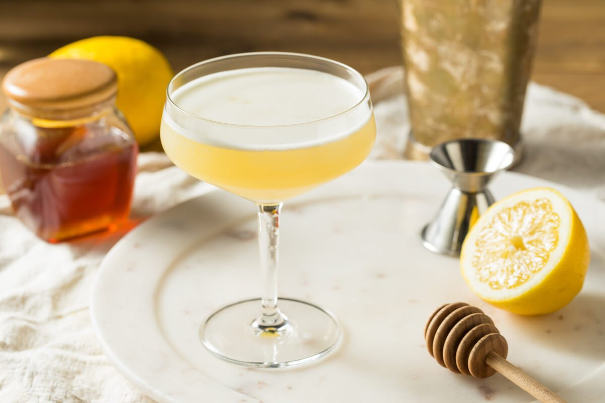

The Perfect Bees Knees

What is a bees knees?
The bee knees is a summery spin on the classic cocktail the gin gimlet. It
uses honey syrup and lemon in place of lime and simple and can be spritzed
up in a variety of fun ways!
Ingredients:
- 2oz Hendricks Gin
- .5oz Honey Syrup
- 1oz Fresh Squeezed Lemon Juice
Preparation:
- Pour all ingredients into a cold boston shaker.
-
If intersted, try subbing a half oz of elderflower liqour or .75oz
lavender syrup for the gin or honey.
- Add enough ice to fill the smaller side of the shaker.
- Shake vigorously then double strain into a chilled coup.
- Garnish with a lemon twist or lavender stem as desired.
- Enjoy!